Dallas Rangemaster Treble Booster Analysis
The Dallas Rangemaster Treble Booster is a booster guitar pedal that especially emphasizes the upper mid and treble frequencies (coloring the signal). It was designed in London (UK) by Dallas Musical Ltd in 1965. At that time, the British tube amplifiers such as the Vox AC30 or Marshall JTM45, tended to produce a slightly dark, muddy tones when overdriven, this box fixed that issue. The effect became popular because of its sweet coloration, slightly bending the signal and giving a soft compression when maxed out.
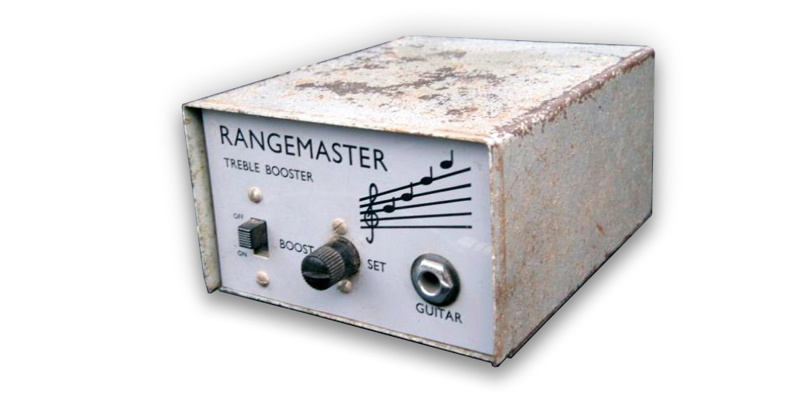
The grey metal box was designed to sit on top of the amp and not on the floor as most of the pedals do nowadays, it features a simple ON/OFF sliding switch and a potentiometer to adjust the volume. The apparent simplicity of the circuit and the limited supply of this discontinued effect make it a perfect target for builder and guitar pedal enthusiasts.
Table of Contents.
1. The Dallas Rangemaster Original Parts.
2. Dallas Rangemaster Treble Booster Schematic.
2.1 Input Impedance.
2.2 Output Impedance.
2.3 Voltage Gain.
2.4 Dallas Rangemaster Signal.
3. Frequency Response.
4. Biasing the Dallas Rangemaster Treble Booster.
4.1 Effects of the Bias Point over the Output Signal.
5. Dallas Rangemaster Treble Booster Mods.
5.1 Positive / Negative Ground Circuits.
5.2 Input Cap Mod.
5.3 Output Cap Mod.
5.4 Input Pull-Down Resistor Mod.
5.5 Output Pull-Down Resistor Mod.
5.6 Bias the Rangemaster with a 100KΩ potentiometer instead of fixed 68K R2 Mod.
6. Resources.
1. The Dallas Rangemaster Original Parts:
The Dallas Rangemaster was designed with the available parts at that time (the 1960's), carbon comp resistors, Mullard germanium transistor, no PCB (all the components are mounted over a piece of a terminal strip), an exotic English potentiometer, etc:
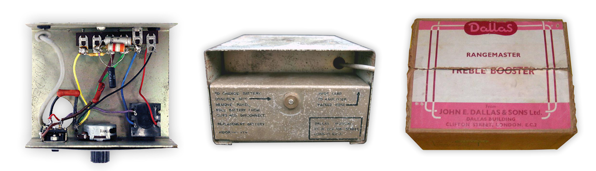
- Carbon Comp Resistors: Carbon comp is an old technology, noisier than modern metal film 1% resistors. These vintage resistors could bring more organic sound (but also are blamed to bring the noise). For other vintage effects like the Fuzz Face that (noisy by definition), carbon comp resistors are a great choice (adding a bit more noise to a high gain fuzz wont hurt anyone). On the other hand, for a booster (like the Rangemaster) maybe carbon comp technology is not a good idea (you want to keep all as clean as possible), so modern film resistors are a better choice.
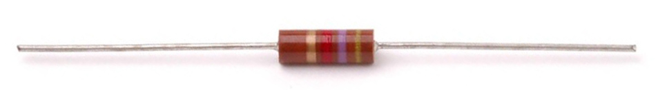
- The potentiometer: The original Dallas Rangemaster uses a UK Welwyn 10k ohm (sometimes 20k) unit with two mounting screws. The potentiometer body was made of bakelite and isolated from the chassis, but this feature does not add any benefit for the pedal.
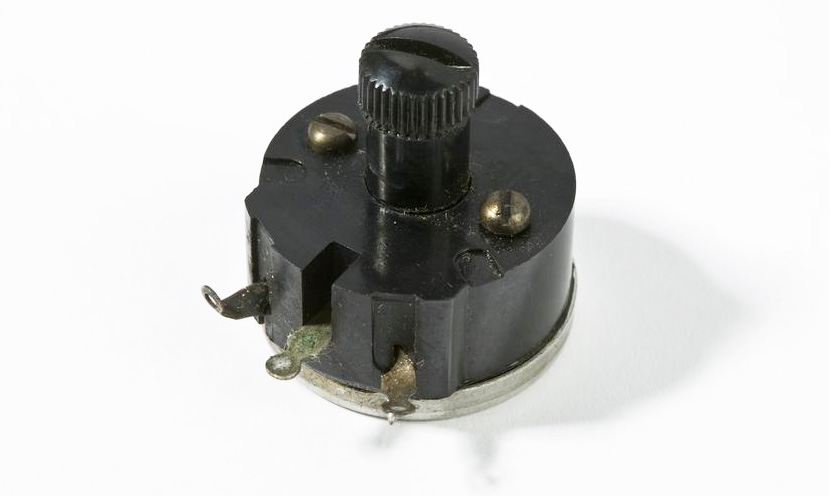
- The original Germanium transistor was the Mullard OC44, long time ago discontinued. They are claimed to sound good with a soft clipping knee but also noisy, microphonic, temperature dependent and gain variable.
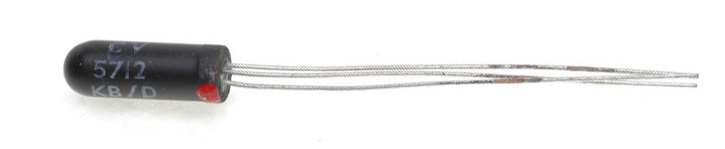
- Capacitors: There is not much magic involved on the caps, they are just common available technologies: 47uF is aluminum electrolytic, de 5nF and 10nF are films.
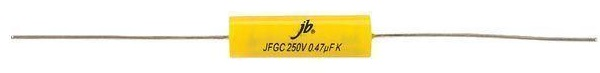
2. Dallas Rangemaster Treble Booster Schematic.
The circuit is beautifully simple, a single stage Common Emitter PNP amplifier:
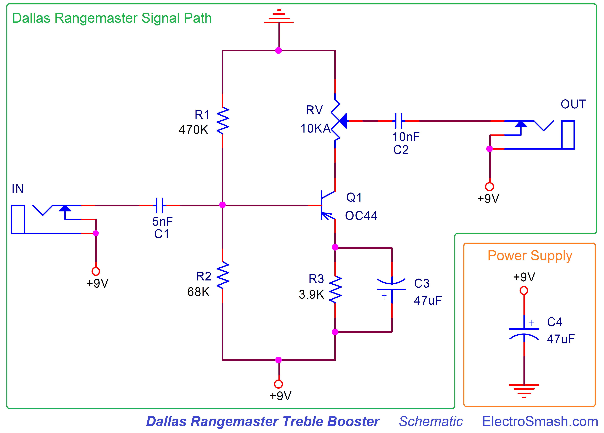
- C1: Is the series 5nF input cap, it will remove any DC level from the input signal and also create a high-pass filter together with R1, R2 and the input impedance of the Q1 transistor. This cap is crucial for the pedal equalization. You can read about this filter in the Frequency Response section and also in the Mods part.
- The resistors R1 (470KΩ) and R2 (68KΩ) create a Voltage Divider across the supply. They provide the required bias voltage to the base of the transistor and define the operating point of the pedal. Biasing the pedal in this way (with a resistor divider in Q1's base) reduces the effect of β (gain) variations, which is pretty common in Germanium transistors.
- RV: Is an audio (logarithmic) 10K potentiometer. It will control the amount of volume of gain applied to the input signal, check the Voltage Gain section for more info.
- R3: is a 3.9KΩ emitter resistor for the Common Emitter amplifier, it will provide negative feedback to the transistor, keeping the bias point stable.
- C3: 47uF electrolytic cap, makes the guitar signal to bypass the R3 resistor. This makes the signal to get higher gain despite the bias point established by R3.
- C2: it is the 10nF output series capacitor. Its task is to clean any DC for the output signal.
- C4: The power supply is simply formed by a single 47uF, there is no protection against reverse polarity connections but makes sense because the original effect was designed to work only on battery. If you want more info about power supply improvements/mods, check the modifications section.
2.1 Dallas Rangemaster Input Impedance.
The input impedance could be calculated as:
Zin = (R1//R2) // (Zin transistor)
Zin = (R1//R2) // (rπ) = 470KΩ // 68KΩ// 12.5KΩ = 10KΩ to 12KΩ approx.
Where:
rπ = [(β+1)xVt]/Ieq = β/gm = 100/0.008 = 12.5KΩ
β = 100, we are using this value by default in the whole article, you can do the numbers using any other value.
gm = Ie/Vt = 0.2mA/25mV = 0.008
Ie= 0.2mA you can check how this is calculated in the biasing section.
The "//" symbol means "resistors in parallel".
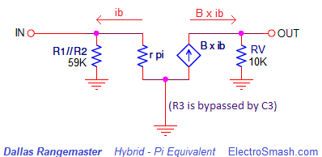
As a rule of thumb, a high input impedance (around 1MΩ) is always desired; it reduces tone sucking, pickups loading and possible interactions/interference between pedals.
12KΩ is a poor input impedance value (Zin), but part of the Rangemaster sound owes its fame due to the way its low Zin interacts with passive pickups. This loading will smooth the highs and helps the guitar volume control the clean it up. So, the input impedance is an important factor on the pedal's tone, if the effect is not driven by a guitar but by a high input impedance buffer, the Rangemaster may sound bright and thin. This is why many people like to place this effect the first in the pedalboard (or keeping it in an isolated loop)
2.2 Dallas Rangemaster Output Impedance.
The output impedance in a Common Emitter amplifier is Rv (the transistor's Rc).
Zin = RV = 0 to 10KΩ
Ideally, a guitar pedal design aims for low output impedance, it makes the circuit to interact nicely with the rest of the pedals on the board. 10K is not bad; most of the designs keep the output impedance below 1K but 10K is still good.
The C3 cap that bypasses the R3 resistor makes the voltage gain formula:
Gv = gm x Rc = 0.008 x 10K = 80 = 38dB.
note:
- gm = 0.008 it was calculated in the Input Impedance section.
- 38dB is a high voltage gain for a booster pedal, other similar pedals like the MXR MicroAmp have a lower voltage gain of 26dB. This is not necessarily a good or a bad thing, but the Rangemaster will for sure be able to drive signals harder.
Note: The DC Voltage across the Volume control: The electronic design of this pedal makes that the RV potentiometer keeps a DC voltage across its terminals. This means that the sound will scratch and whenever the volume is touched (even if you use the original plastic- non-conductive original discontinued Wilk potentiometers)
2.4 Dallas Rangemaster Signal.
The maximum swing operating point in the Rangemaster happens when Vb=7V approx. and Vc=4V approx. But as you will see in the Bias Section, the considered best sounding biasing happens with Vb=8V approx. and Vc=2V approx. The transistor amplifier is not at the center of the linear region, and it will result in an asymmetric soft clipping:
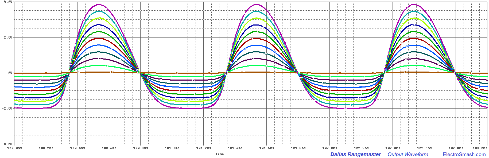
When the Vol control is maxed out, the signal will be boosted and also driven into soft clipping, this will color the signal and make the sound quite particular. Germanium parts are famous for their soft clipping and biased off the middle of its swing area, the signal will be compressed in one of their semi cycles, making the sound asymmetrically warmer and rounder.
3. Dallas Rangemaster Treble Booster Frequency Response.
The frequency response is dominated by the high-pass filter created by the C1 and the input impedance of the pedal. But there are 2 more caps (C2 and C3) that also create high-pass filters:
- C1: creates a high-pass filter with a fc=1/2πC1xZin = 1/(2 x π x 5nF x 12KΩ) = 2.6KHz
- C2: creates a high-pass filter with a fc=1/2πC1xRload = 1/(2 x π x 10nF x 1MΩ) = 15.9Hz (not in the audio band)
- C3: creates a high-pass filter with a fc=1/2πC3xR3 = 1/(2 x π x 47uF x 3.9KΩ) = 0.8Hz (not in the audio band)
The most important filter for the audio response is C1, attenuating the harmonics below 2.6KHz and giving full gain to the treble.
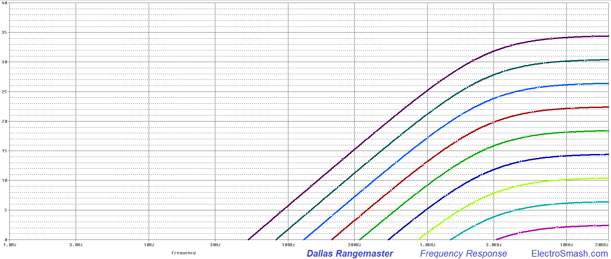
The magic of this equalization is that frequencies over 2.6KHz will have full gain and a soft clipping when the strings are strummed hard. Giving some warm tone to the high frequencies.
4. Biasing the Dallas Rangemaster Treble Booster:
Germanium transistors have an Hfe (also called β and Gain) value that changes from part to part. As a result of that the bias point of the pedal will change from one unit to another, to fix that and try to make the best sound out of the pedal we have two options:
- Find the germanium transistor with the perfect HFE gain 90: Any value between 75 and 100 would be great. The problem is that germanium transistors went out of fashion 30 years ago, there are no lines of production and finding NOS batches with a decent gain is almost impossible. In the '60s this was a viable option, nowadays not so much.
- Bias the circuit properly: When Dallas designed the Rangemaster, they probably had access to good transistors with controlled gain, so they just set a pair of fixed resistors (R1 and R2). Now that the transistors are not so numerous, we can just adjust this 2 resistors and make the pedal sound its best.
The sound of the Rangemaster is heavily dependant on the bias point. Usually, transistors are biased to the middle of their swing area so they can produce the biggest non-distorted output signal (maximum headroom). This is not the case of the Rangemaster, where the bias is a bit off the center creating an asymmetric gain.
The Perfect Bias point:
It is commonly agreed that the ideal bias point for the Dallas Rangemaster Treble Booster is to have Q1 collector voltage at -7.0V (any value between -6.9 and -7.1 would be great), if you refer the voltage to ground and not to +9V (like the image below) the perfect Vc=+2V ( any value between 1.9 and 2.1).
The easiest way to achieve the best sounding bias is to substitute the 69KΩ R2 by a 100KΩ or 200KΩ trimmer resistor (a Bourns multiturn resistor is expensive but the best part for this task):
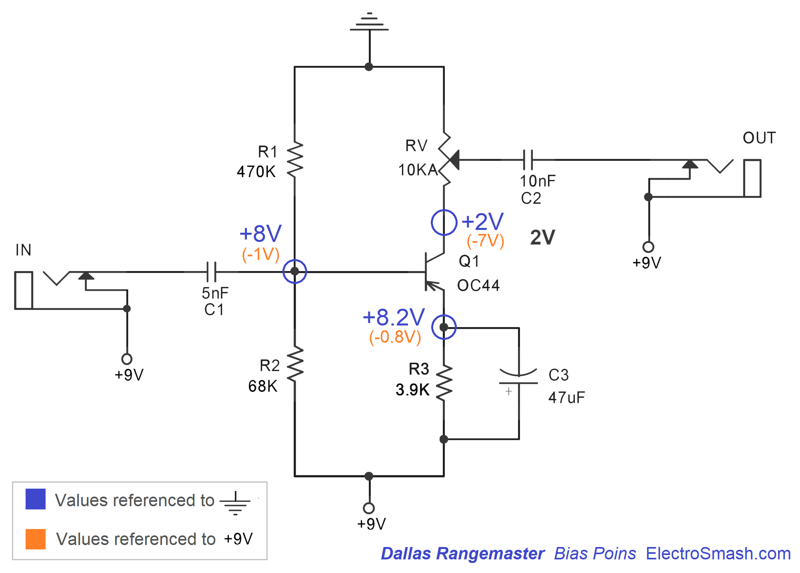
Calculating the Base voltage:
Vb = Vcc x R1/(R1+R2)/= 9 x (470KΩ/(470KΩ + 68KΩ)) = 7.8V (8V approx.)
The Base voltage (defined by R1 and R2) will determine the Base current:
Vb = Vbe + (β+1) x Ib x R3
ib = (Vb - Vbe) / (R3 x (β+1))
ib = (7.8 - 0.3) / (3.9KΩ * (100+1))
ib = 0.0195mA
note:
- Vbe=0.3V for most of Germanium transistors.
- We are using a default value of transistor Hfe = β = 100
The collector current and Collector Voltage will be:
Ic = β x ib = 100 x 0.0190= 1.9mA (2mA approx)
Vc= -Ib x Rv = -0.2mA x 10KΩ = -2V.
It is important to understand, that following the equation, if the β value changes, the bias point will change too. This is why using a trimmer resistor instead of R2 will compensate for this β variation.
4.1 Effects of the Bias Point over the Output Signal.
The bias point has a direct effect over the output waveform shape and the sound of the Rangemaster. In the image below you can see the output signal with different Vb values when the Volume knob is maxed out:
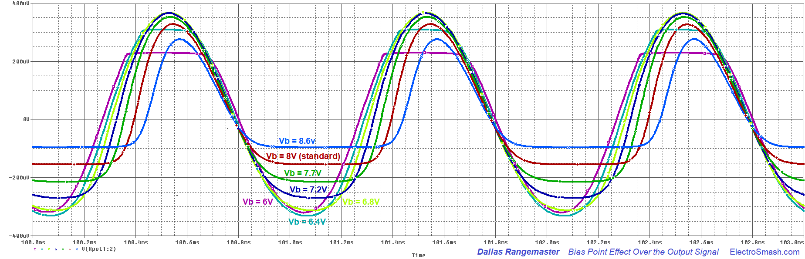
You can see how the default configuration (Vbase=8V) is not the cleanest option. Setting a Vb=6.8V (7V approx.), like the light green trace will give us more headroom and clean sound. But part of the character and mojo of this pedal remains on its biasing.
note: For all these graphs we have used a Q1 transistor with gain = 100.
5. Dallas Rangemaster Treble Booster Mods.
The simplicity of the circuit makes builders experiment adding some extra features so players can have some more knobs and switches to play with.
5.1 Positive / Negative Ground Circuits.
There are 4 ways to ground the Rangemaster circuit:
- PNP Positive Ground: it is the original circuit. It sounds fantastic but the problem with it is that if you want to use an external DC adapter (and not only batteries) it will create a short circuit (see how the input and output jacks are referenced to +9V and not ground). The original box never faced this issue because it only works on batteries. So please do not use a daisy chain power adaptor with a positive ground guitar pedal.
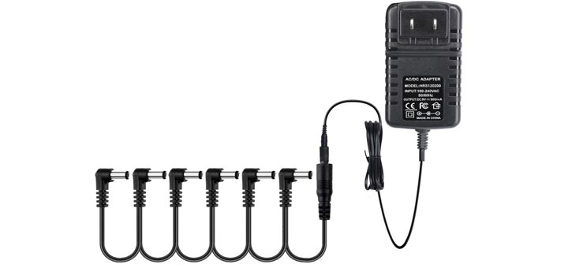
- PNP Negative Ground: it is a modern mod that adapts the pedal to be used with a standard daisy chain power supply. The input and output caps remove any DC so the input/output jacks can be re-grounded to the real GND. The problem with this approach is that the circuit would be very prone to oscillations/hissing/motorboat noise. The long return currents from the input and output jacks make the pedal unstable. Most of the times, it would work, especially because the Rangemaster does not have a massive gain ( like other popular PNP Negative ground circuits like the Fuzz Face that are very problematic), however, I would not recommend this circuit. If you want to use a real negative ground circuit, use the last option (MAX1044 mod).
- NPN Negative Ground: Using an NPN transistor, the pedal can be grounded in a standard manner, removing any problems with power supplies and oscillation. Any low gain NPN transistor would work here: 2N5088, 2N3904, 2N4401, BC108, BC109, BC109C, BC183, BC183L, BC209C (all of them are Silicon). The problem with this circuit is that there are not so many NPN germanium transistors out there.
- PNP Real Negative Ground: We can use a MAX1044 (or the equivalents: ICL7660, TC1044) to create a "real" -9V. You can use this -9V in the circuit making it compatible with a daisy chained power supply and without oscillation. Note that you have to be careful with the MAX1044 layout to reduce any noise from the charge pump. This mod is also used and described on the Radian Rangemaster Project by Aion Electronics.

The Dallas Rangemaster Input Cap modification is the most popular one. By simply changing the C1 input cap we can transform the frequency response making it more limited or wide. It is easy to implement, just using an ON-OFF-ON SW1 switch. There are two typical sets of cap values (5/10/15nF and 5/47/100nF) that you can use for this mod:
- If you want to keep the original tone of the Rangemaster and make subtle adjustments over it, the typical values are 5nF (standard value), 10nF and 15nF. Check the graph below to see how the frequency response is modified:
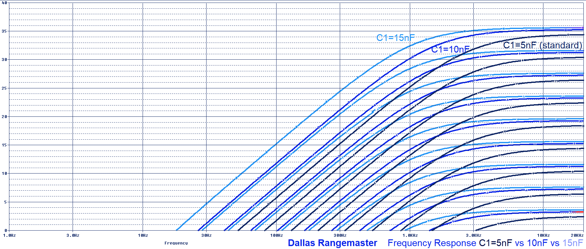
- If you want to be more aggressive, some players use the 5nF (standard value), 47nF and 100nF. This values are far from the original sound but may make the pedal more versatile, making the booster more wide frequency and not just for the treble. Check the graph below to see how the frequency response is modified:
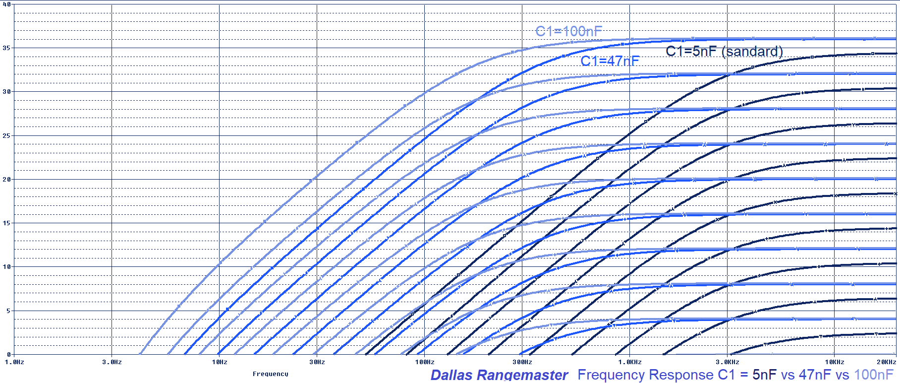
5.3 Dallas Rangemaster Output Cap Mod.
This modification is not as popular as the Input Cap Mod and for a reason. Although it has to be admitted that 10nF is a low value for an output cap (many pedals use caps in the 100nF to 47uF range for this). Changing the C3 value will modify the filter created by this cap and the "load" or next pedal/amplifier in the chain. Users have different setups or "loads" so the result is variable.
In the same way, as in the Input Cap Mod, this feature could be implemented by using an ON-OFF-ON switch to change between 1nF, 10nF (standard value), 1uF. But if you have a good load (around 100KΩ to 1MΩ) the cut-off filter frequency (fc=1/2piRC) will not affect the audio band.
5.4 Input Pull-Down Resistor: The original Rangemaster was designed to be used between the guitar and the amp, with no other effects around. If you plan to use it together with other effects is recommended to use a pull-down input resistor (anything between 1MΩ – 10MΩ) to avoid the input cap to pop when activated.
5.5 Output Pull-Down Resistor: similar to the input pull-down resistor, if the Rangemaster is going to be used together with more effects and activated/bypassed on stage, its good to place an output pull-down resistor to discharge the output cap and avoid pops when activated (anything between 1MΩ – 10MΩ). None of the input/output pull-down resistors will affect the sound.
5.6 Bias the Rangemaster with a 100KΩ potentiometer instead of fixed 68KΩ R2:
A 100KΩ or even a 200KΩ potentiometer (Burns multiturn resistors are great for this task) can be used to adjust the bias point and make the pedal to sound its best. By using it we can fix the problems with low gain germanium transistors and adjust the Vb to the optimal +8V. You can get more info about this is the Bias Section.
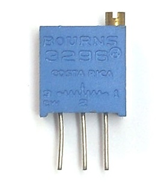
- Rangemaster Technology from "Guitar Amplifiers"
- Dallas Rangemaster Study By RG Keen, the first and best document out there.
- The Rangemaster by Premier Guitar.
My sincere appreciation to J. Blake Arnold for your help with this analysis.
Thanks for reading, all feedback is appreciated: This email address is being protected from spambots. You need JavaScript enabled to view it.
Some Rights Reserved, you are free to copy, share, remix and use all material.
Trademarks, brand names and logos are the property of their respective owners.